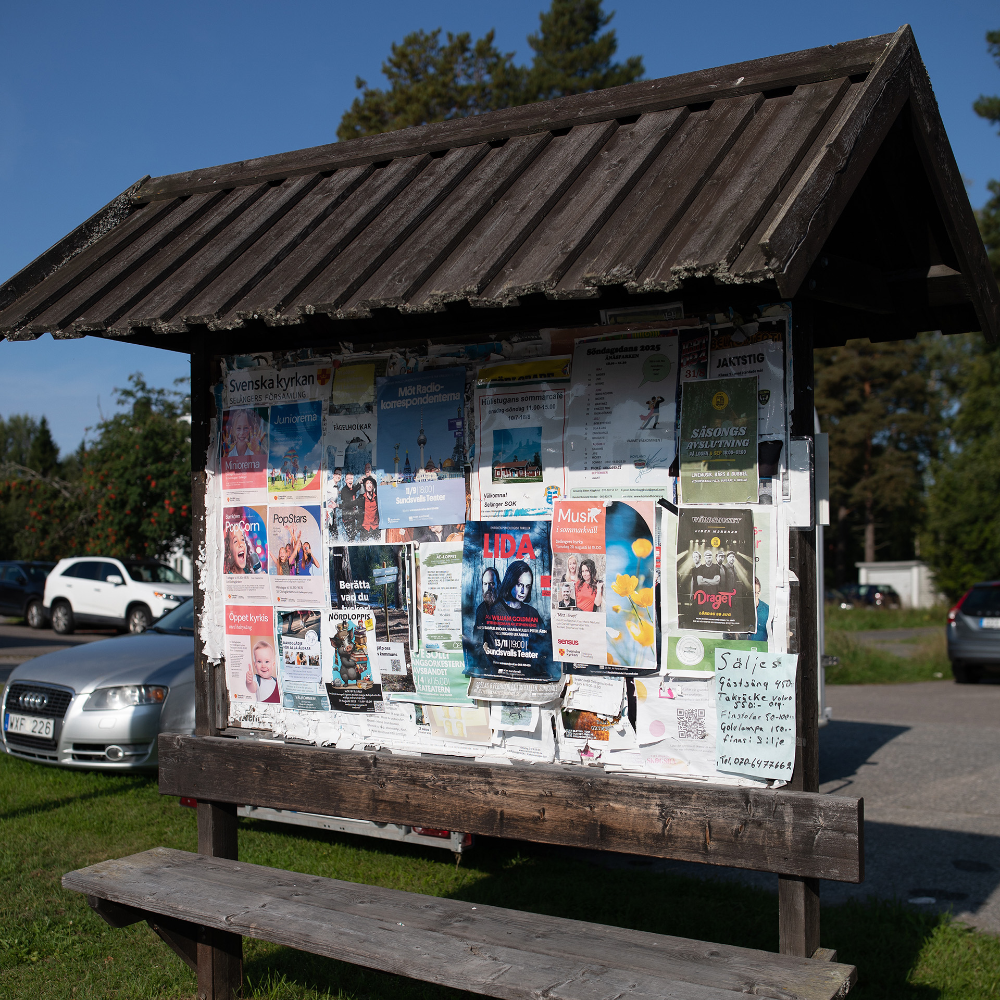

Bergsåker
Öppna fält och travbanans rytm möter Selångersdalens landskap. Ljus och vind i ständig rörelse.
Hitta till platsen · Lat 62.41484, Lon 17.22519
- Amina Al-Sayeed — Skuggornas sten
- Erik Nylander — Vattenljus
Ett stadsomfattande projekt på sex offentliga platser i Sundsvall. Tio konstnärer visar verk i dialog med varje plats.
Öppna fält och travbanans rytm möter Selångersdalens landskap. Ljus och vind i ständig rörelse.
Hitta till platsen · Lat 62.41484, Lon 17.22519
Tallskog, gångstigar och gårdsmiljöer som ramar in stilla vardagsrytmer.
Hitta till platsen · Lat 62.42138, Lon 17.33471
Kustnära tallhed och vikar. Salt luft och mjuka horisonter mot Bottenhavet.
Hitta till platsen · Lat 62.351247, Lon 17.352746
Öppna fält, byvägar och lång sikt. En lantlig kant av staden där vinden bär berättelser.
Hitta till platsen · Lat 62.4050, Lon 17.2380 (provisoriskt)
Bergssluttningar och gårdstorg. Ljudbilder mellan fasader och ekon från vardagens rörelser.
Hitta till platsen · Lat 62.39139, Lon 17.26361
Mellan broar och vattendrag. Trä och sten i skiftande ljus, där stadens puls möter strandkanten.
Hitta till platsen · Lat 62.400764, Lon 17.342297

Skuggornas sten undersöker mötet mellan sten och ljus genom ingraverade spår som fångar solens rörelse över dagen.

Vattenljus speglar vattenytans skiftningar på sten och fasad och låter vädret skriva verket i realtid.

Ångande tegel lyfter industrins arv med mild dimma och röster som vandrar genom kvarteren.

Rost och röst är en mekanisk skulptur där patina och ton bildar ett långsamt samtal med platsen.

Flodens puls är ett flerkanaligt ljudstycke där vind och vatten blir instrument.

Valvprojektion låter långsamma projektioner följa ytor och strukturer i mötet mellan skog och kust.

Trådar i landskapet är en textil intervention som fångar vindar och riktningar över åkermarken.

Skymningskrona är en ljusmobil som väcks av brisen och ritar mjuka mönster i kvällsljuset.

Spår av tid är en fotografisk serie i stor skala som följer linjerna mellan vatten, vind och byggd miljö.

Vindfång är en kinetisk skulptur där riktade vingar fångar luftströmmar och skapar rytmiska rörelser.